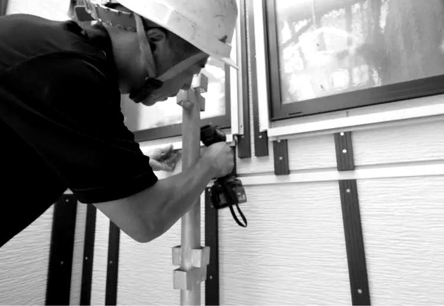
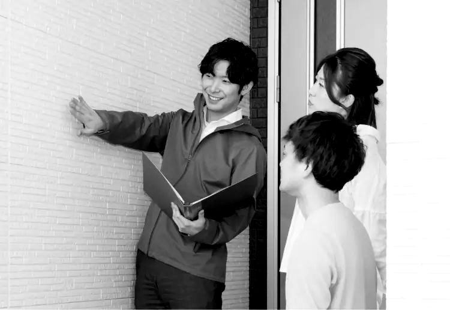
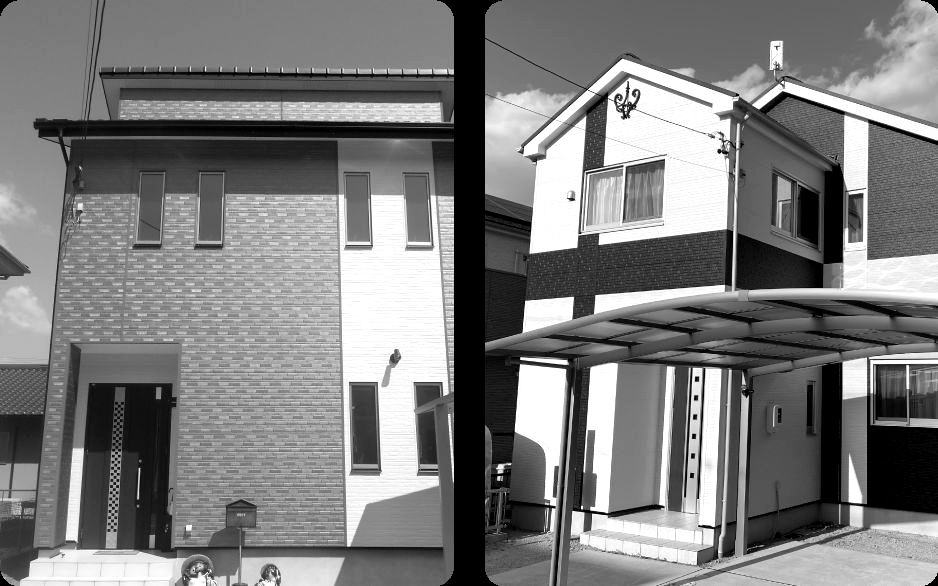
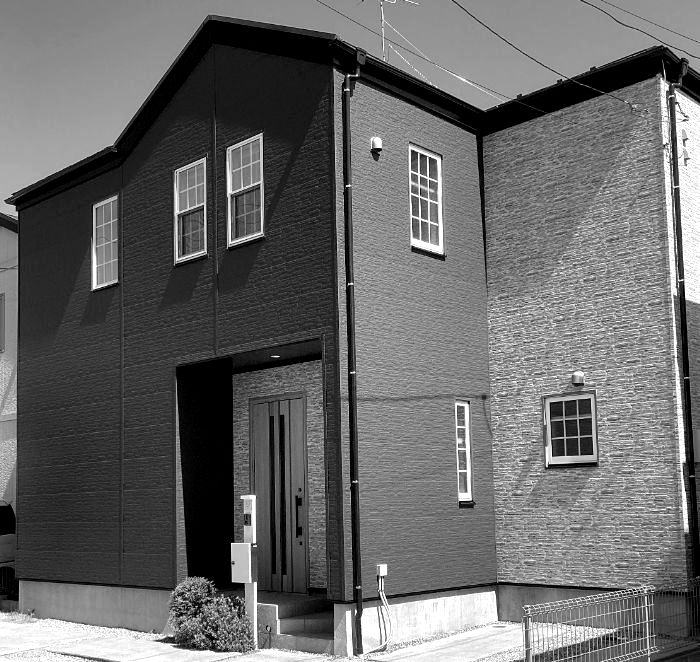
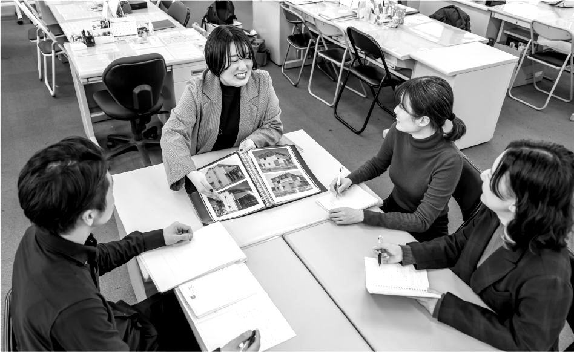
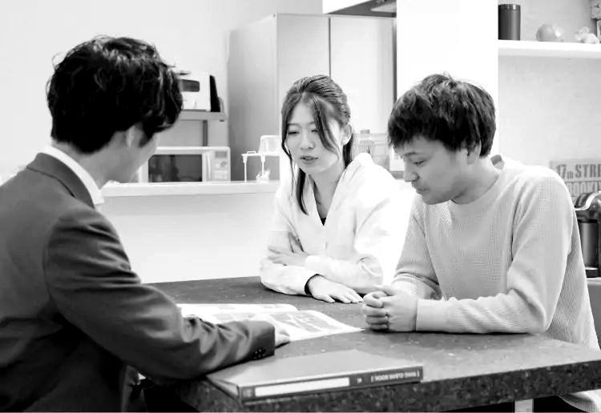

PRODUCT
商材のこだわり
見えないところまで手を抜かない外壁材と工法。だから「長く安心できます」と言い切れます。
提案用デモです。写真・数値・日程は公開情報や例による仮置きで、内容はご支給の情報で差し替えます。
スマイルタイム（住居時間）× Graise HOME
合同 新卒採用 2028
アルミサイディングで、住まいの外壁を新しくする会社です。
あなたの仕事は、お客様が最初に出会う「リフォームアドバイザー」。
同じ商材、同じこだわり。違うのは、働くエリアだけ。
スマイルタイムとGraise HOMEは、2社合同で新卒の仲間を迎えます。
01私たちのこだわり
スマイルタイムとGraise HOMEは、KTCファシリティーズのアルミサイディングを提案する2社です。それぞれにこだわりがあるから、お客様に胸を張って住まいの笑顔を届けられます。
見えないところまで手を抜かない外壁材と工法。だから「長く安心できます」と言い切れます。

専門のメンバーがバトンをつなぎ、お客様の笑顔までやり遂げます。

売り込まず、胸を張って勧める。お客様が最初に出会う「会社の顔」として。
02働く人
新卒で入社した先輩たちが、入社の決め手や、最初の不安をどう乗り越えたかを話します。
入社2年目の例です。担当エリアをまわり、夕方はチームで振り返ります。
※社員紹介・1日の流れはデモ用の例です。取材にもとづいて作成します。
03仕事：リフォームアドバイザー
リフォームアドバイザーは、担当エリアのご家庭を訪ね、住まいのお困りごとに耳を傾けて、リフォームを考えるきっかけをつくる仕事です。その先はチームがバトンをつなぎます。
いいえ。きっかけづくりと商談は別の担当者が受け持つ完全分業制です。一人で最初から最後まで抱え込むことはありません。
目標はあります。チームで追いかけ、毎日の振り返りで次の一手を一緒に考えます。（回答は確認のうえ掲載します）
商談担当、工事・カスタマーコンシェルジュ、本部、インテリアコーディネーターなど、さまざまな職種へ広がります。
04こだわりの商材
今ある外壁の上に、新しい外壁を重ねて張る「カバー工法」と、アルミサイディング。施工後の安心が30年続く組み合わせです。
052社紹介
希望する勤務エリアで、応募する会社が決まります。説明会はどちらの会社か決めていなくても参加できます。

中部・関西・中国・九州
関東・甲信越・東北商材仕事研修は2社共通。選ぶのは勤務エリアだけです。
06説明会・インターンシップ
オープンカンパニーとインターンシップは、このページのフォームから申し込めます。オンラインでも参加できます。

2社の事業と商材、リフォームアドバイザーの仕事を、先輩社員がご紹介します。

外壁の診断やお客様へのご提案を、ロールプレイで体験します。先輩との座談会つき。
※日程はデモ用の例です。公開後は管理画面から日程を追加・締め切りできます。
07数字と育成
スマイルタイムの設立。外壁リフォーム一筋
施工例写真コンテストに入賞（スマイルタイム）
若手が中心の職場（スマイルタイム・2026年4月）
アルミサイディング×カバー工法の基本性能
ビジネスマナー、商材・工法の基礎知識を学びます。
先輩と同行し、話し方や診断の仕方を横で覚えます。
定期研修と面談で、次のステップを一緒に考えます。
※研修の内容・期間は確認のうえ掲載します。出所：マイナビ2027 会社概要、各社公式サイト
08募集要項
| 項目 | スマイルタイム | Graise HOME |
|---|---|---|
| 募集職種 | リフォームアドバイザー | リフォームアドバイザー |
| 勤務地 | 名古屋・浜松・大阪・広島・福岡ほか | 横浜・さいたま・柏・新潟・茨城 |
| 給与・手当 | マイナビ2028掲載の内容を、2社並べて掲載します | |
| 休日・休暇 | 同上 | |
| 応募資格 | 2028年3月卒業予定の方（全学部・全学科） | |
| 選考の流れ | オープンカンパニー → エントリー → 面接（2回程度）→ 内定 | |
| 募集職種 | リフォームアドバイザー（未経験歓迎）ほか |
|---|---|
| 勤務地 | 希望エリアの支社・支店（スマイルタイム／Graise HOME） |
| 応募方法 | 応募フォームから。希望エリアで応募先の会社が決まります |
09FAQ
希望する勤務エリアをもとにお選びください。説明会はどちらの会社か決めていなくても参加できます。フォームでエリアを選ぶと、応募先の会社が表示されます。
大丈夫です。入社後の研修と先輩との同行で、住まいの知識やお客様との話し方を段階的に身につけます。
（公式回答をいただいて掲載します）チームで目標を持ち、毎日の振り返りで次の一手を一緒に考える体制を、具体的にお伝えします。
入社研修、現場での同行、定期的なフォローアップの3段階です。（期間・内容は確認のうえ掲載します）
（公式回答をいただいて掲載します）